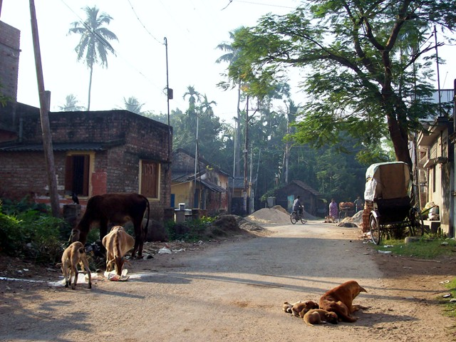
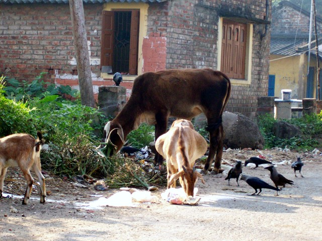
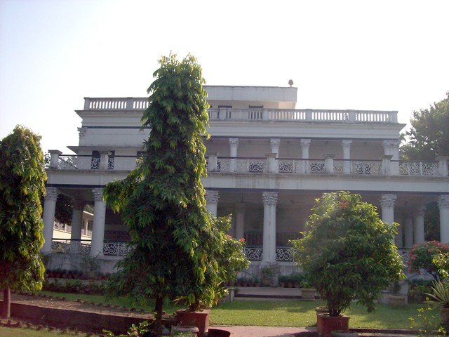
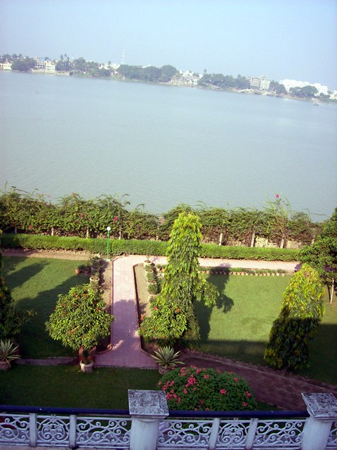
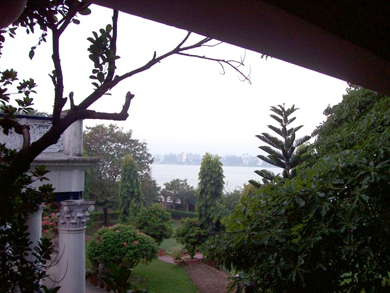
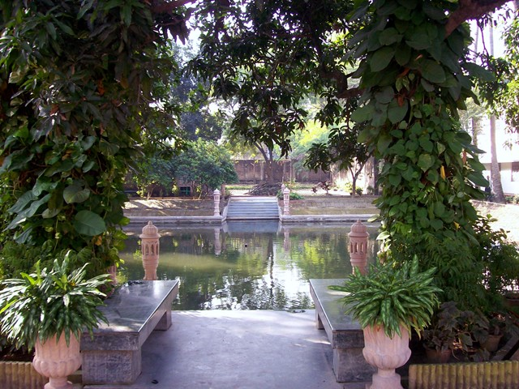
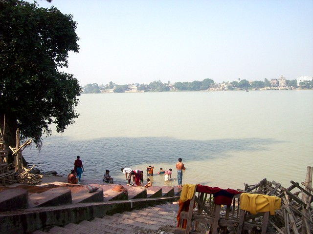
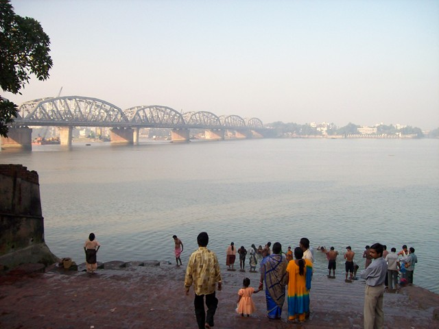
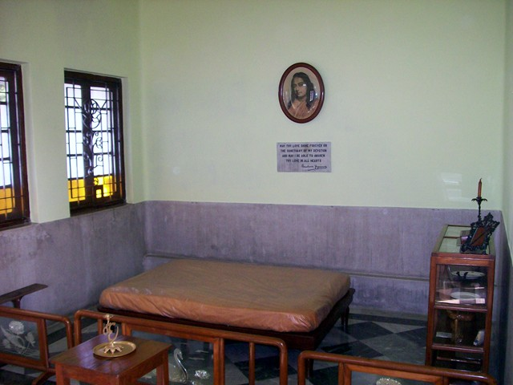
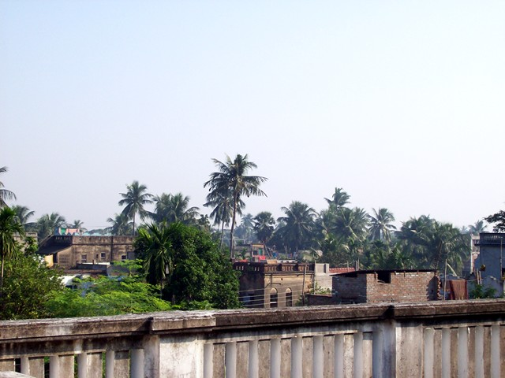

Dakshineswar

Downtown Dakshineswar
First stop: Ashram in Dakshineswar, a bit north of Kolkata along the Ganges. Ram had hired a driver, Pradip, for touring sites near Kolkata. We drove along a winding road of homebrew housing on the riverfront. No electricity, just an occasional candle for outdoor lighting. These people literally had nothing but the shirts on their backs, but they had each other. Cliche, but they seemed truly happy. The object deficit (as the World Bank would have it) didn't seem to bother them at all.
The townhouse-style shanties seemed a fire hazard to me, but what do you do--bulldoze them and make everone live outdoors? Ram explained that the Kolkata government, which has been Communist since forever, had legitimized the shanties and they'd be left to stand.

If you're an animal lover, you're always getting these surges of love, because nowhere in India are you ever out of sight of animals. In the East, it's cows, bulls, dogs, birds and goats. In Rajasthan, add camels and wild pigs.

Ashram terrace. Peformed Recharging Exercises here each morning overlooking the Ganges. Meditations are held in a hall on the right. My Guru bought this ashram on a home trip from Los Angles in the 1930s, and never actually stayed here. The monks have since built him a room on roof, which was not part of the original construction.

View from the terrance

Ganges view from room on second floor. Don't have pictures of the room, but the accomodations are Spartan. The bed is a sheet on plywood, and there's no hot water. I never had a hot shower the whole time in India. Either there was no hot water, or there was one of those 45-minute lead time mini-water-heaters high up on the wall. I splashed everywhere I could stand to splash.

Pool on ashram grounds

Bathing ghat. Brother Bhaktananda dipped in the Ganges here. Asked Ram (who shrugged and said "go ahead" about eating street food) if I should. He paused and said "Better wait six months. Get some antibodies first." The burning ghat at Varanasi is upstream. Traditionally, the bodies of children, smallpox and cobra victims are thrown in whole.

The Incredible Shaking Bridge (forget the actual name) could use some reengineering. Caught riverboat to Serampore from here.

Guruji's room on the roof, funished with some of the items from his room in Los Angeles.

View from the ashram roof.